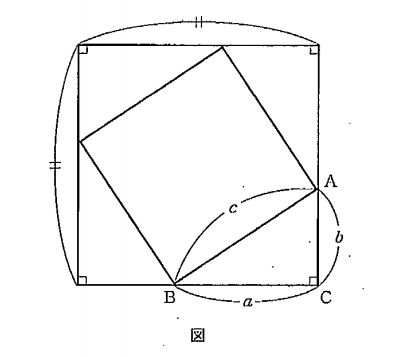
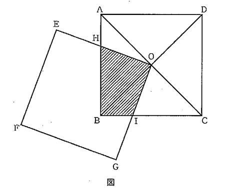
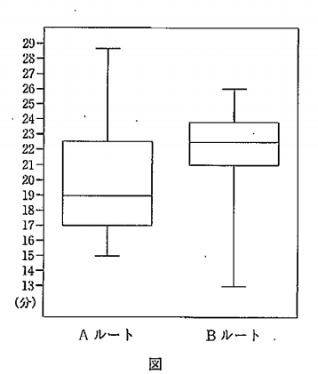

令和2年度 青森県教員採用試験
中学校・高等学校「数学」 解答・解説
- 1
\(a\)を定数とする。\(x\)の2次関数\(y=x^2-2(a+1)x+5a+3 (0≦x≦2)\)のとき,次の(1)～(3)に答えなさい。
- (1)この関数のグラフの頂点を求めなさい。
- (2)この関数の最小値を求めなさい。
- (3)この関数の最小値が2のとき、\(a\)の値を求めなさい。
- 2
不等式\(x-3y+6≦0\), \(3x+y-12≦0\), \(x+2y-4\)を満たす座標平面上の点\((x,y)\)全体からなる領域を\(D\)とする。
次の(1),(2)に答えなさい。
- (1)領域\(D\)を図示しなさい。
- (2)点\((x,y)\)が領域\(D\)内を動くとき,\(x^2+y^2\)の最大値,最小値およびそのときの\(x,y\)の値を求めなさい。
- 3
次の(1),(2)に答えなさい。
- (1)1～9の番号が1つずつかかれた9個の球がある。次の①～③に答えなさい。
-
①9個の球を4個,3個,2個の3つのグループに分ける方法は何通りか,求めなさい。
②9個の球を3個ずつ3つのグループに分ける方法は何通りか,求めなさい。
③9個の球をA,B,Cの3つのグループに分ける方法は何通りか,求めなさい。
ただし,それぞれのグループに少なくとも1個の球を分けることとする。
- (2)区別しない9個の球をD,E,Fの3つのグループに分ける方法は何通りか,求めなさい。
ただし,球を1個も分けてもらえないグループがあってよいものとする。
- 4
次の(1),(2)に答えなさい。
- (1)図は,直角三角形\(ABC\)と合同な直角三角形を1辺の長さが\(c\)である正方形のまわりにかいたものである。
この図を利用して、三平方の定理\(a^2+b^2=c^2\)が成立することを証明しなさい。

- (2)図のような四角形\(ABCD\)と四角形\(EFGO\)は,1辺が\(6cm\)の合同な正方形であり,点\(O\)は対角線\(AC\),\(BD\)の交点で
ある。2つの正方形が重なった部分(四角形\(HBIO\))の面積が\(9cm^2\)になることを説明しなさい。

- 5
研究センター前から運動公園前までのバスのルートは,Aルート,Bルート,Cルートの3つがある。次の(1),(2)に答えなさい。

- (1)図は,Aルート,Bルートをそれぞれ20回運行したときの移動時間の数値を整理した箱ひげ図である。
次の①,②に答えなさい。
-
①Aルートの移動時間の数値22分があるとき,Aルートの移動時間のデータの中で,22分は第2四分位数より小さい数値と
と大きい数値のいずれになるか,理由を付けて答えなさい。
②AルートとBルートの移動時間のデータを比較したとき,移動時間が20分以上の数値は,AルートとBルートのどちらが
多いか,理由を付けて答えなさい。
- (2)Cルートを利用して5回移動したときの移動時間は,18分,21分,31分,28分,17分となった。次の①,②に答えなさい。
-
①この5回の移動時間の平均値,四分位範囲をそれぞれ求めなさい。
②この5回の移動時間の数値のうち1個が誤りであることが分かった。正しい数値に基づく中央値と平均値は,それぞれ
22分と24分であるという。誤っている数値を選び、正しい数値を求めなさい。
- 6
次の文は、新中学校学習指導要領(平成29年度告示)「数学」の「各学年の目標及び内容」の「第3学年」の「目標」である。
下の(1),(2)に答えなさい。
-
(1) 数の平方根,多項式と二次方程式,図形の相似,円周角と中心角の関係,三平方の定理,関数\(y=ax^2\),標本調査などにつ
いての基礎的な概念や原理・法則などを理解するとともに,事象を( ① )したり,数学的に解釈したり,数学的に表現・
処理したりする( ② )を身に付けるようにする。
-
(2) 数の範囲に着目し,a数の性質や計算について考察したり,文字を用いて数量の関係や法則などを考察したりする力,図
形の構成要素の関係に着目し,図形の性質や計量について論理的に考察し表現する力,関数関係に着目し,その特徴を表,
式,グラフを相互に関連付けて考察する力,( ③ )と母集団の関係について着目し,母集団の傾向を推定し判断したり,
調査の方法や結果を( ④ )に考察したりする力を養う。
-
(3) ( ⑤ )の楽しさや数学のよさを実感して粘り強く考え,数学を生活や学習に生かそうとする態度,問題解決の過程
を振り返って評価・改善しようとする態度,多様な考え方を認め,よりよく問題解決しようとする態度を養う。
-
(1)①～⑤にあてはまる語句を書きなさい。
(2)中学校第3学年の生徒に対して,下線部aのような力を身に付けさせるために,次に示す学習課題を提示して授業を行った。
下の①,②に答えなさい。
-
学習課題
-
2つの連続する偶数の大きい方の2乗から小さい方の2乗を引いた差が偶数になることを,文字を用いた式を使って説明しよう。
-
① この学習課題の解答例を1つ書きなさい。
② この学習課題解決後,生徒Aから「2つの連続する偶数の大きい方の2乗から小さい方の2乗を引いた差は偶数になるだけでなく,
他にも言えることがある。」と発表があった。生徒Aの考えとして予想されることを1つとりあげ,文字を用いた式を使って説明しない。